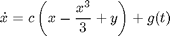
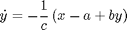
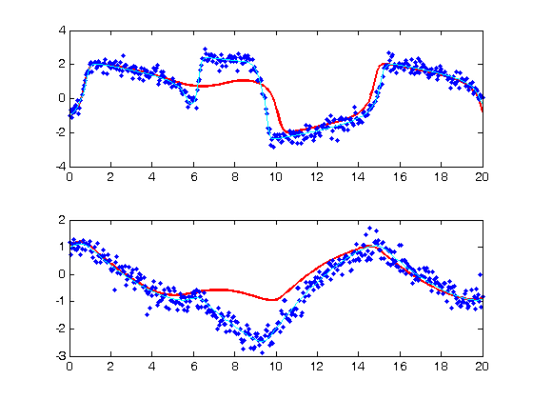
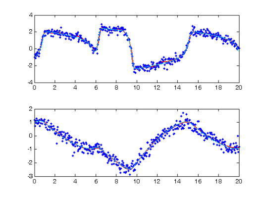
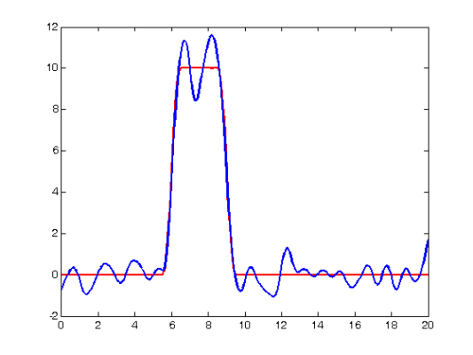

Estimating Forcing Functions for the FitzHugh-Nagumo Equations
This page provides a demonstration of the use of forcing functiona perturbed set of FitzHugh-Nagumo Equations:


Here we will assume knowledge of $a$, $b$ and $c$, and estimate $g(t)$ from data.
The format of this demonstration follows that detailed in FhNEx.html and commentary will therefore be restricted to terms unique to forcing function estimation.
Contents
- RHS Functions
- Observation times
- Various Parameters
- Extra Information for the System:
- Penalties on Forcing Functions
- Initial Forcing Estimates
- Create trajectories
- Set up observations
- Fitting parameters
- Optimisation control
- Setting up functional data objects
- Smooth the data
- Re-Smooth with a Model-Based Penalty
- Now do the profiled estimation
- Examine Forcing Functions
- Calculate a Sample Information Matrix
- Calculate Hotelling Distance from Zero
RHS Functions
Since we are using a linear function to begin with, we make use of the forcing set of functions (although fhnfunodep will be used to produce data).
addpath('../FhN') odefn = @fhnfunodep; % Function for ODE solver (exact) fn.fn = @forcingfun; % RHS function fn.dfdx = @forcingdfdx; % Derivative wrt inputs (Jacobian) fn.dfdp = @forcingdfdp; % Derviative wrt parameters fn.d2fdx2 = @forcingd2fdx2; % Hessian wrt inputs fn.d2fdxdp = @forcingd2fdxdp; % Cross derivatives wrt inputs and parameters fn.d2fdp2 = @forcingd2fdp2; % Hessian wrt parameters fn.d3fdx2dp = @forcingd3fdx2dp; % Third derivative wrt inputs, inputs, pars fn.d3fdx3 = @forcingd3fdx3; % Third derivative wrt inputs fn.d3fdxdp2 = @forcingd3fdxdp2; % Third derivative wrt inputs, pars and pars
Warning: Name is nonexistent or not a directory: ..\FhN.
Observation times
tspan = 0:0.05:20; % Observation times obs_pts{1} = 1:length(tspan); % Which components are observed at obs_pts{2} = 1:length(tspan); % which observation times. tfine = 0:0.05:20; % Times to plot solutions
Various Parameters
y0 = [-1,1]; % Initial conditions pars0 = [0.2; 0.2; 3]; % Parameters for the FitzHugh-Nagumo equations % Set up a perturbation functional data object basis_obj = create_bspline_basis([0 20],42,3,0:0.5:20); quadvals = MakeQuadPoints(0:0.5:20,21); % We will need to use basis_obj = putquadvals(basis_obj,quadvals); % quadrature points later %pcoef = zeros(42,1); pcoef(floor(42/3):(ceil(42/3)+5)) = 10; fd_obj = fd(pcoef,basis_obj); % Finally decide on a noise level: sigma = 0.25; % Noise Level
Extra Information for the System:
In particular, we need to specify the original ODEs and their derifatives with respect to components (in this case the FitzHugh-Nagumo Equations) and also the option of adding further information for the original system.
fn_extras.fn = @fhnfun; % Original function fn_extras.dfdx = @fhndfdx; % First derivative fn_extras.d2fdx2 = @fhnd2fdx2; % Second derivative fn_extras.d3fdx3 = @fhnd3fdx3; % Third derivative fn_extras.extras = []; % Original information to fn_extras.fn. % We also need to add parameters: fn_extras.pars = pars0; % We also need to specify a basis for the forcing components and a vector % indicating which components are to be forced. fn_extras.basisp = {basis_obj}; % Cell array of basis functions. fn_extras.which = 1; % Force the first component of the % system only. % Note that although we are only forcing one component here, the forcing % basis is still represented as a cell array and we could equally have % estimated a number of forcing functions.
Penalties on Forcing Functions
We can also place roughness penalties on forcing functions, these will then occur as inputs into Profile_GausNewt.
pen = @forcingpen; % Penalty dpen = @forcingdpen; % Derivative with respect to forcing co-efficients d2pen = @forcingd2pen; % Second derivative % These penalty functions also require extra arguments in the form of a % struct to specify the basis, the degree of smoothing and the smoothing % penalty: pen_extras. basis = {basis_obj}; % Same basis as fn_extras. pen_extras.deg = 2; % Penalize the second derivative pen_extras.lambda = 0.0001; % Smoothing parameter.
Initial Forcing Estimates
We start off assuming the forcing function is zero. Since the coefficients of a basis expansion for it occur as parameters in the profiled estimation scheme we set them as:
startpars = zeros(getnbasis(basis_obj),1);
Create trajectories
odeopts = odeset('RelTol',1e-13);
[full_time,full_path] = ode45(odefn,tspan,y0,odeopts,pars0,fd_obj);
[plot_time,plot_path] = ode45(odefn,tfine,y0,odeopts,pars0,fd_obj);
Set up observations
Tcell = cell(1,size(full_path,2)); path = Tcell; for i = 1:length(obs_pts) Tcell{i} = full_time(obs_pts{i}); path{i} = full_path(obs_pts{i},i); end % add noise Ycell = path; for i = 1:length(path) Ycell{i} = path{i} + sigma*randn(size(path{i})); end % and set wts wts = []; if isempty(wts) % estimate wts if not given for i = 1:length(Ycell) wts(i) = 1./sqrt(var(Ycell{i})); end end
Fitting parameters
lambda = 1000; % Smoothing for model-based penalty lambda = lambda*wts; lambda0 = 1; % Smoothing for 1st-derivative penalty nknots = 401; % Number of knots to use. nquad = 5; % No. between-knots quadrature points. norder = 6; % Order of B-spline approximation
Optimisation control
lsopts_out = optimset('DerivativeCheck','off','Jacobian','on',... 'Display','iter','MaxIter',1000,'TolFun',1e-8,'TolX',1e-10); % Other observed optimiation control lsopts_other = optimset('DerivativeCheck','off','Jacobian','on',... 'Display','on','MaxIter',1000,'TolFun',1e-14,'TolX',1e-14,... 'JacobMult',@SparseJMfun); % Optimiation control within profiling lsopts_in = optimset('DerivativeCheck','off','Jacobian','on',... 'Display','off','MaxIter',1000,'TolFun',1e-14,'TolX',1e-14,... 'JacobMult',@SparseJMfun);
Setting up functional data objects
% set up knots range = [min(full_time),max(full_time)]; % range of observations knots_cell = cell(size(path)); % knots for each basis knots_cell(:) = {linspace(range(1),range(2),nknots)}; % set up bases basis_cell = cell(1,length(path)); % Create cell arrays. Lfd_cell = cell(1,length(path)); nbasis = zeros(length(path),1); bigknots = knots_cell{1}; % bigknots used for quadrature points nbasis(1) = length(knots_cell{1}) + norder - 2; for i = 2:length(path) bigknots = [bigknots knots_cell{i}]; nbasis(i) = length(knots_cell{i}) + norder -2; end quadvals = MakeQuadPoints(bigknots,nquad); % Create simpson's rule % quadrature points and values for i = 1:length(path) basis_cell{i} = MakeBasis(range,nbasis(i),norder,... % create bases knots_cell{i},quadvals,4); % with quadrature Lfd_cell{i} = fdPar(basis_cell{i},1,lambda0); % pts attatched end
Smooth the data
DEfd = smoothfd_cell(Ycell,Tcell,Lfd_cell); coefs = getcellcoefs(DEfd); devals = eval_fdcell(tfine,DEfd,0); for i = 1:length(path) subplot(length(path),1,i); plot(plot_time,plot_path(:,i),'b','LineWidth',2); hold on; plot(tfine,devals{i},'r','LineWidth',2); plot(Tcell{i},Ycell{i},'b.'); hold off; end

Re-Smooth with a Model-Based Penalty
[newcoefs,resnorm2] = lsqnonlin(@SplineCoefErr,coefs,[],[],... lsopts_other,basis_cell,Ycell,Tcell,wts,lambda,fn,[],startpars,... fn_extras); tDEfd = Make_fdcell(newcoefs,basis_cell); % plot results along with exact solution, there is a noticeable lack of % fit. devals = eval_fdcell(tfine,tDEfd,0); for i = 1:length(Ycell) subplot(length(Ycell),1,i); plot(tfine,devals{i},'r','LineWidth',2); hold on; plot(Tcell{i},Ycell{i},'b.'); plot(plot_time,plot_path(:,i),'c'); hold off end
Optimization terminated: relative function value changing by less than OPTIONS.TolFun.
Now do the profiled estimation
Recall that at this point we are estimating the coefficients of the forcing functions.
[fcoefs,DEfd] = Profile_GausNewt(startpars,lsopts_out,tDEfd,fn,lambda,... Ycell,Tcell,wts,[],lsopts_in,fn_extras,pen,dpen,pen_extras); % DEfd now takes the form of a smooth to the data and we can see that it % fits better: devals = eval_fdcell(tfine,DEfd,0); for i = 1:length(path) subplot(length(path),1,i); plot(tfine,devals{i},'r','LineWidth',2); hold on; plot(Tcell{i},Ycell{i},'b.'); plot(plot_time,plot_path(:,i),'c'); hold off end
Iteration steps Residual Improvement Grad-norm parameters
1 1 126.093 0.592753 0.298 -0.74061 -0.066343 0.51962 -1.4236 -0.72229 0.45195 0.056012 -1.0448 0.36335 -0.3683 -1.0082 -0.005413 -0.95034 8.7874 -2.6424 1.3379 3.5346 4.958 7.9916 -1.69 8.9789 7.6286 -1.8416 0.67843 -0.45554 2.3315 -0.092889 0.31005 -1.0432 2.4937 -2.8465 -3.2763 0.12289 -0.53359 0.72481 -0.97313 0.92401 -1.2589 0.73558 -0.62486 0.36293 1.9134
2 1 72.7815 0.422797 0.0348 -0.543809 0.0390957 0.516403 -1.356 -0.665423 0.432098 0.0144772 -0.977691 0.377309 0.243895 -0.780672 1.15339 -1.13211 16.0818 3.05923 -0.152166 7.74569 12.3853 8.40364 -1.6618 6.87211 8.87325 0.309595 -0.575085 -0.684515 2.02412 0.0723844 0.403837 0.293083 0.0533429 -0.438236 -0.782215 -1.51268 0.0342214 0.695885 -0.924587 0.921273 -1.23676 0.664204 -0.593956 0.414861 1.71205
3 1 47.4938 0.347447 0.0049 -0.715957 -0.0300497 0.561359 -1.2115 -0.506859 0.649419 0.283191 -0.797805 0.712243 0.44896 -0.389681 0.148751 0.38651 7.89654 11.4206 1.92934 8.62524 13.0305 8.78573 -0.0574364 2.13521 7.14525 0.191142 -1.6327 -1.39984 1.74743 -0.185594 0.348316 -0.217555 0.515205 -0.157832 0.173842 -1.05544 -0.221741 0.693638 -0.91932 0.913194 -1.20305 0.713828 -0.588338 0.367317 1.68152
4 1 42.5592 0.1039 0.000321 -0.715045 -0.041507 0.563264 -1.19524 -0.484007 0.671902 0.311927 -0.689212 0.751827 0.615595 -0.473893 0.459882 -0.0831338 9.12517 12.3077 6.32168 9.84922 12.3152 8.96157 0.683865 -0.820837 2.59282 -0.0508123 -1.09665 -1.1372 1.88296 -0.0315437 0.394611 -0.220598 0.354213 -0.259916 0.379593 -0.841356 -0.237914 0.757766 -0.922057 0.938468 -1.2212 0.690566 -0.606 0.374637 1.69128
5 1 42.3398 0.00515544 3.84e-005 -0.720761 -0.0416537 0.563535 -1.19708 -0.486534 0.669067 0.306695 -0.693857 0.746413 0.610066 -0.469159 0.440291 -0.0508425 9.05762 12.2901 7.48831 10.2603 12.2103 8.90905 0.826736 -1.32213 0.85847 -0.422614 -0.928106 -1.19913 1.90477 -0.0708986 0.407958 -0.241958 0.357149 -0.256231 0.369341 -0.817005 -0.241774 0.753444 -0.916983 0.93269 -1.21777 0.690004 -0.604909 0.372529 1.69073
6 1 42.339 1.89533e-005 5.64e-006 -0.720825 -0.041736 0.563424 -1.19735 -0.486874 0.668637 0.306201 -0.694535 0.746017 0.609175 -0.469827 0.440023 -0.0504314 9.05743 12.303 7.56272 10.2486 12.2188 8.90285 0.834049 -1.33174 0.732646 -0.458082 -0.90851 -1.20296 1.90775 -0.0738449 0.408676 -0.240962 0.357092 -0.25465 0.3566 -0.814203 -0.242588 0.754458 -0.91737 0.933962 -1.21846 0.689439 -0.604891 0.373614 1.69102
7 1 42.339 1.45619e-008 1.38e-007 -0.720822 -0.0417374 0.563415 -1.19735 -0.486883 0.668626 0.306195 -0.694572 0.746036 0.609076 -0.469778 0.439908 -0.0502118 9.0568 12.3036 7.56565 10.2476 12.2187 8.90246 0.834309 -1.33185 0.729867 -0.458573 -0.907431 -1.2033 1.90798 -0.0741554 0.408809 -0.241104 0.357339 -0.254891 0.356914 -0.814291 -0.242613 0.754476 -0.917333 0.93397 -1.21846 0.689354 -0.604886 0.373709 1.69101
8 1 42.339 1.26056e-010 5.35e-009 -0.720822 -0.0417377 0.563414 -1.19735 -0.486883 0.668625 0.306194 -0.694573 0.746036 0.609071 -0.469779 0.439909 -0.0502163 9.05682 12.3036 7.56575 10.2475 12.2187 8.90245 0.834316 -1.33185 0.729817 -0.458599 -0.907401 -1.20329 1.90798 -0.0741527 0.408801 -0.241093 0.357339 -0.254889 0.356877 -0.814287 -0.242609 0.754477 -0.917329 0.933971 -1.21846 0.689348 -0.604886 0.373714 1.69101
 Examine Forcing Functions
First we constitute the approximated forcing function:
fd_approx = fd(fcoefs,basis_obj); % Now plot the results along with the original forcing function: force_devals = eval_fd(tfine,fd_obj); approx_devals = eval_fd(tfine,fd_approx); subplot(1,1,1) plot(tfine,force_devals,'r','LineWidth',2); hold on plot(tfine,approx_devals,'b','LineWidth',2); hold off
Calculate a Sample Information Matrix
d2Jdp2 = make_d2jdp2(DEfd,fn,Ycell,Tcell,lambda,fcoefs,[],wts,...
fn_extras,d2pen,pen_extras);
d2JdpdY = make_d2jdpdy(DEfd,fn,Ycell,Tcell,lambda,fcoefs,[],wts,fn_extras);
dpdY = -d2Jdp2\d2JdpdY;
S = make_sigma(DEfd,Tcell,Ycell,0);
Cov = dpdY*S*dpdY';
Calculate Hotelling Distance from Zero
Look at the distance of fcoefd from 0 with respect to the metric defined by Cov. This is a heuristic Wald test for the goodness of fit of the original equations.
disp(['Goodness of fit = ',num2str(fcoefs'*inv(Cov)*fcoefs)])
Goodness of fit = 1800.802